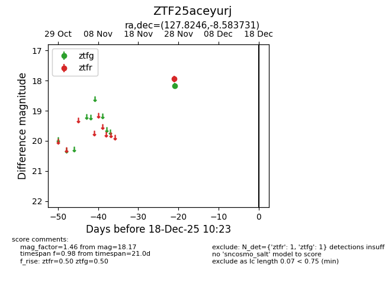
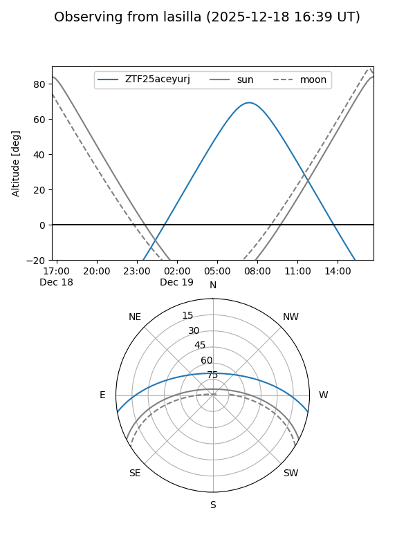
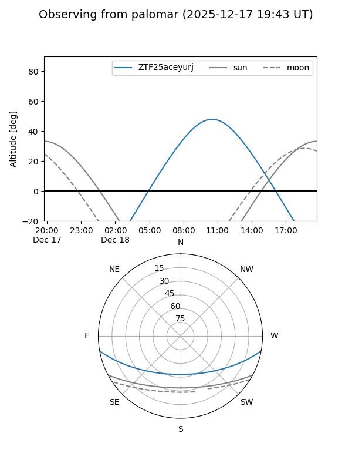

ZTF25aceyurj
Target ZTF25aceyurj at 2025-12-18 11:17
Aliases and brokers:
FINK: fink-portal.org/ZTF25aceyurj
Lasair: lasair-ztf.lsst.ac.uk/objects/ZTF25aceyurj
ALeRCE: alerce.online/object/ZTF25aceyurj
alt names
ZTF25aceyurj (ztf,fink_ztf)
Coordinates:
equatorial (ra, dec) = 127.8246,-8.58373
equatorial (HMS+DMS) = 08:31:17.90,-08:35:01.43
galactic (l, b) = (232.7549,+17.66005)
Photometry
last ztfg=18.17, ztfr=17.95
1 ztfg, 1 ztfr detections
Lightcurve

Visibility


Additional plots